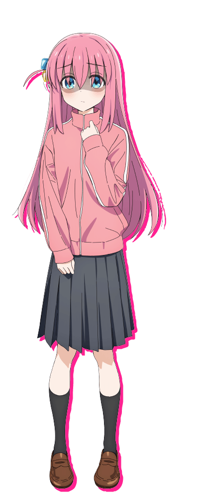

Qui sont les personnages de Bocchi the rock ?
Hitori Gotoh
Hitori Gotoh, souvent appelée Bocchi-chan par ses camarades, est la protagoniste principale du manga et de la série animée Bocchi the Rock ! Elle est en première année au lycée Shuka et s'occupe de la guitare et des paroles du groupe Kessoku Band.
Ikuyo Kita est l'un des personnages principaux de la série manga et anime Bocchi the Rock ! Elle est en première année au lycée Shuka et est responsable de la guitare et du chant du groupe Kessoku Band. Elle a une grande admiration pour Ryo Yamada, après avoir assisté à son concert dans la rue.
Nijika Ijichi est l'un des personnages principaux de la série manga et anime Bocchi the Rock ! Elle est étudiante en deuxième année au lycée Shimokitazawa et batteuse dans le groupe Kessoku Band.

Ryo Yamada est l'un des personnages principaux de la série manga et anime Bocchi the Rock ! Elle est en deuxième année au lycée Shimokitazawa et est la bassiste du groupe Kessoku Band. Elle travaille à temps partiel au studio STARRY avec Nijika Ijichi.
Gogeta a deux techniques qui lui sont propres.
La première est le "Châtiment Spirituel". Cette technique consiste à purifier l'âme de son adversaire. Plus sont adversaire est maléfique, plus elle est efficace.
Nous pouvons la voir à l'oeuvre dans le film "Fusion Reborn" contre "Janemba" où l'ont peut voir à quelle point cette technique est efficace, mais aussi dans le film "Dragon Ball Super: Broly" où l'ont peut voir l'inconvégnant de cette technique.
La deuxième n'apparaît que dans "Dragon Ball GT" ou dans les jeux Dragon Ball.
Cette technique s'appelle le "Big Bang Kamehameha". C'est une fusion entre la technique du "Kamehameha" qu'utilise Son Goku et le "Big Bang Attack" de Vegeta.
C'est un rayon d'énergie géant qui peut aisément venir à bout de nombreux adversaire.